시즌이 시작하기 전, 많은 전문가들이 포스트시즌 진출 팀을 예상하곤 합니다. 물론 제가 그런 걸 할 만한 인사이트가 있을 리는 없습니다. 대신, 저에겐 컴퓨터가 있습니다. 그래서, 한 번 재밌는 일을 해 보고 싶었습니다. 시즌 시작 전에 포스트시즌 진출 팀을 시뮬레이션 해 보는 것을 말이죠.
물론 그런 걸 제대로 하려면 Fangraphs.com처럼 뎁스 차트를 만들고, 2026시즌 예상 라인을 만들고 취합한 후 시뮬레이션을 하는 게 ‘정석’일 겁니다. 그런데 제가 지금 그런 걸 할 수 있을 리가 없습니다. 그럴 만한 자료를 얻기는 힘드니까요. 무엇보다, 선수들의 예상 성적을 계산하는 게 여간 어려운 게 아니죠. 그래서 저는 잔재주를 (다른 말로는 서커스) 부릴 수 밖에 없습니다.
사실 저는 기술적인 글이 사실은 훨씬 더 중요하다고 생각하지만, 그걸 이 페이지에 적는다면 아마 많은 분들이 결과를 보기도 전에 이 페이지를 떠날 겁니다. 그건 제 목적이 아니기에, 기술적인 부분은 다른 글에 적을 것입니다. 궁금하신 분들에게 아주 간략한 개요만 보여드리자면, 전 시즌 승률을 통한 랜덤 워크(Random Walk)로 다음 시즌을 예측해 보는 겁니다. 이렇게 한다면, 제가 예상할 수 없는 부분을 일정 수준의 ‘무작위’로 예상을 함으로써 어느 정도 간극을 메꿀 수 있다고 판단했습니다.
덧붙여서, 이런 예측 시뮬레이션에 관심 많으신 분들이라면 제가 이번에 한 시뮬레이션에 일반적인 시뮬레이션에 비해 팀들의 승수 분산이 더 큰 것을 알 수 있을 겁니다. 예를 들어, Fangraphs.com에서 한 2026시즌 시뮬레이션의 경우 승수 분포를 보여줄 때 IQR의 범위가 8승, 9승 정도인 것을 발견할 수 있습니다. 제가 한 이번 시뮬레이션의 경우 12승에 달할 정도입니다. Fangraphs.com에서 발견할 수 있는 저 분산은 딱 ‘이산 분산’에 의한 효과입니다. 야구적으로, 어쩔 수 없이 시스템 내부에 잠재해 있는 ‘운’이죠. 그건 시스템 그 자체에 내재해 있는 문제입니다. 하지만 시즌을 진행하다 보면 단순 이산 분포에 의한 분산 뿐만 아니라 예측할 수 없는 선수의 부상, 부진 등이 포함되죠. 특히 부상이 큰 문제입니다. 이건 팀의 전력 자체를 변화시키는 효과니까요. 이런 걸 시즌 전에 제대로 예측할 수 있을 리가 만무합니다. 그렇기 때문에 시즌 전에 하는 ‘예측’ 시뮬레이션은 어쩔 수 없이 분산이 이산 분포에 의한 분산보다 더 커져야 한다고 생각합니다. 무엇보다, 저는 선수 개별 시뮬레이션을 통한 계산을 진행하지 않기 때문에, 어쩔 수 없이 Fangraphs보다 더 분산이 커질 수 밖에 없다는 ‘근본적인’ 문제점도 있습니다. 이 문제는 현재 저로서는 어쩔 수 없습니다.
1위팀의 승률은 0.613, 10위 팀은 0.387에 평균적인 승률 표준편차는 0.071였습니다. 5위 팀은 평균적인 승률은 0.510이었습니다. 시뮬레이션 결과에서 보듯이, 그렇게까지 KBO 리그 평균에서 벗어나지 않는 시즌이 될 확률이 높을 것으로 보입니다.(10개 구단 체제 평균 승률 분산 0.076)
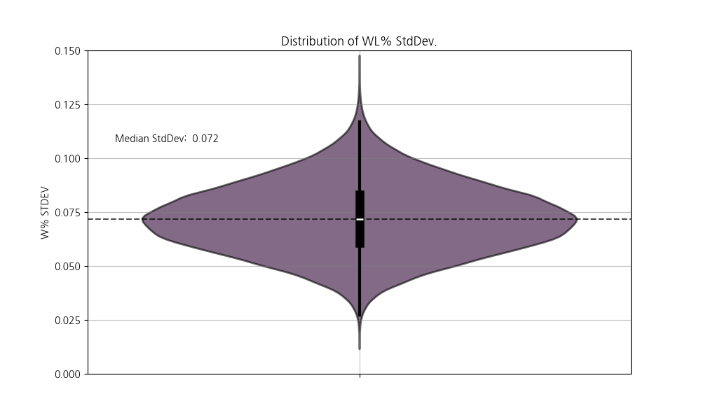
팀별 기대 승률은 아무래도 1위-10위 만큼의 차이가 날 수는 없습니다. 하지만 그럼에도 불구하고 LG(0.553)와 삼성(0.542), 키움(0.437)의 기대 승률은 평균(5할)에서 꽤 많이 벗어나 있습니다.
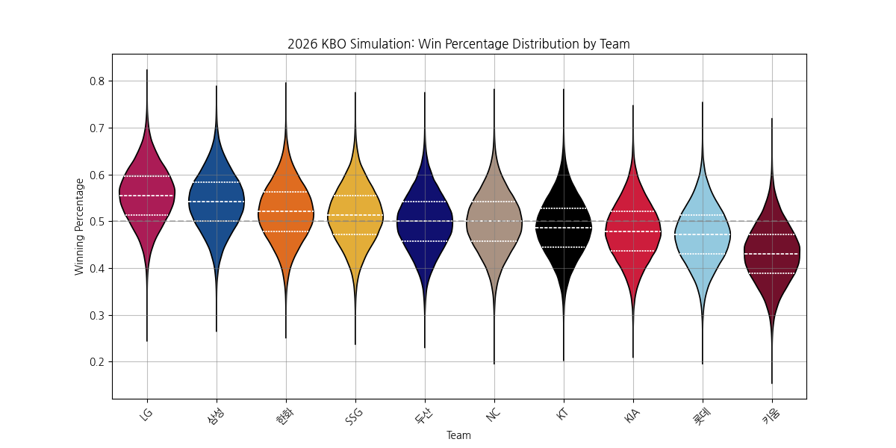
순위는 아무래도 기대 승률을 따라갈 수 밖에 없습니다. 딱 중위권에 있는 두산과 NC의 순위 변동성과 KIA의 순위 변동성이 클 것으로 보입니다.
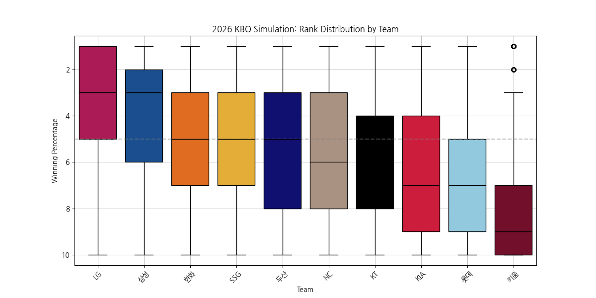
한국시리즈 최다 매치업은 삼성 vs LG(12.0%)입니다. 다음 표는 가장 확률이 높은 한국시리즈 매치업 리스트 top 5를 정리한 표입니다.
| 순위 | 매치업 | 확률 |
|---|---|---|
| 1 | 삼성 vs LG | 12.0% |
| 2 | 한화 vs LG | 6.8% |
| 3 | LG vs SSG | 6.5% |
| 4 | 삼성 vs 한화 | 5.3% |
| 5 | 삼성 vs SSG | 5.1% |
그렇다면 우승 팀은 어디가 될 확률이 높을까요? 아래의 그림을 보면 됩니다. 아래의 차트에서 볼 수 있듯이, 전년도 우승팀 LG의 우승 확률이 27.0%에 달할 정도입니다. 다음이 삼성의 21.2%, 한화의 11.2%, SSG의 10.6% 순으로 이 네 팀이 우승 확률이 10%가 넘고, 도합해서는 70.1%에 달할 정도입니다.
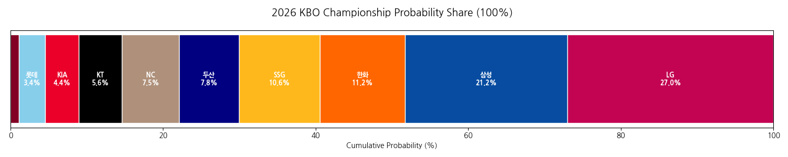
정규시즌 순위 확률 차트와 포스트시즌 예상 결과 차트는 색이 진해질수록 각각 정규시즌,포스트시즌 우승에 가까워지는 걸 뜻합니다.
평균 순위 5.5위. 3-8위권 싸움을 할 중위권 후보.
두산의 승수는 50% 이상의 확률로 78승에서 66승에 분포할 것으로 보입니다. (기대 승률 0.500, 72.1승)
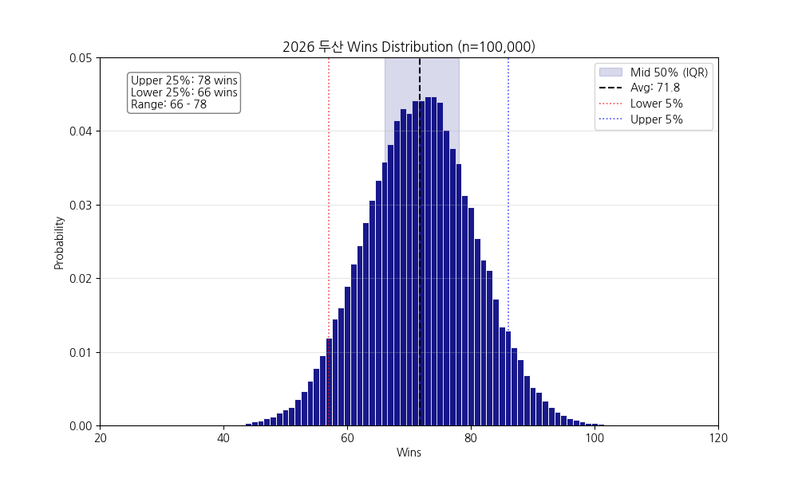
두산의 포스트시즌 진출 확률은 50.3%, 정규시즌 우승 확률은 7.6%로 계산 됐습니다. 정규시즌을 3위에서 8위로 끝낼 확률이 66.0%로 계산 됐습니다.
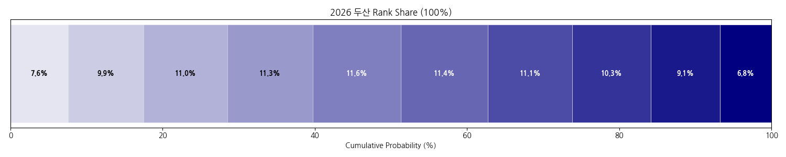
두산의 KS 진출 확률은 17.4%, 우승 확률은 7.8%로 시뮬레이션 됐습니다.
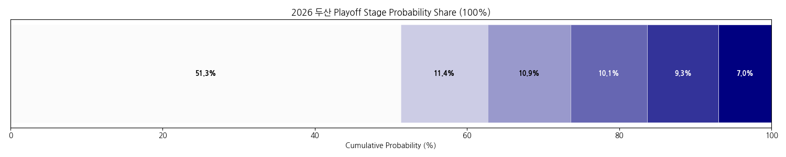
평균 6.7위가 예상되며, 5-9위 사이에 있을 확률이 가장 높을 것으로 예상됩니다.
롯데의 승수는 50% 이상의 확률로 74승에서 62승에 분포할 것으로 보입니다. (기대 승률 0.472, 68.0승)
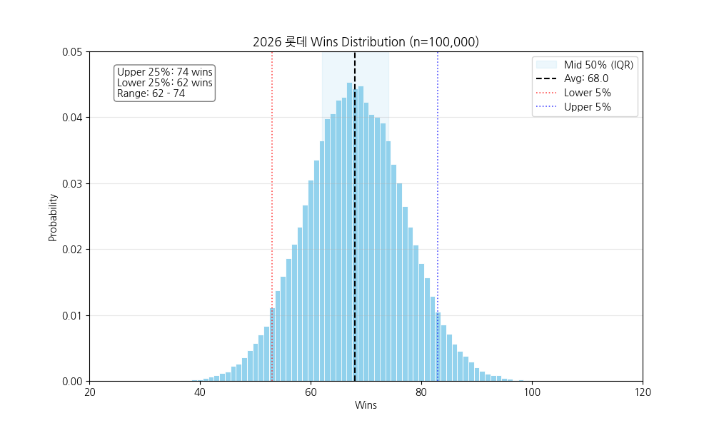
롯데의 포스트시즌 진출 확률은 32.6%, 정규시즌 우승 확률은 3.3%로 계산 됐습니다. 정규시즌을 7위에서 10위로 끝낼 확률이 56.5%로 계산 됐습니다.
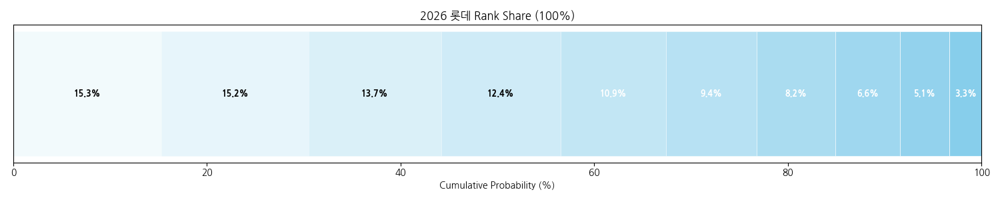
롯데의 KS 진출 확률은 8.7%, 우승 확률은 3.4%로 시뮬레이션 됐습니다.
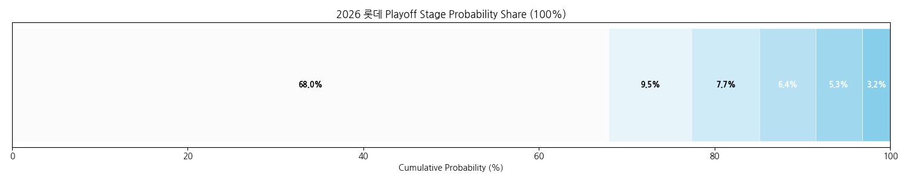
평균 3.8위로 매우 안정적인 상위권 전력을 구축하고 있습니다. 우승 확률 2위(21.2%).
삼성의 승수는 50% 이상의 확률로 84승에서 72승에 분포할 것으로 보입니다. (기대 승률 0.542, 78.0승)
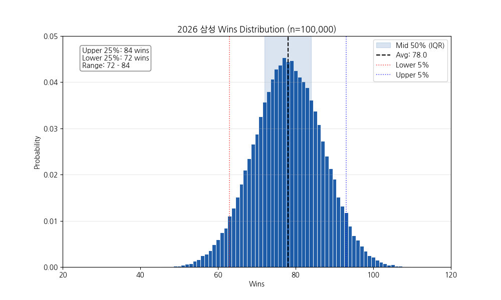
삼성의 포스트시즌 진출 확률은 74.4%, 정규시즌 우승 확률은 21.4%로 계산 됐습니다. 정규시즌을 1-3위로 끝낼 확률이 52.8%로 계산 됐습니다.
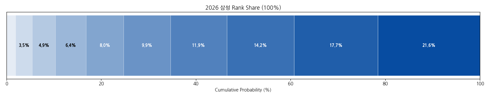
삼성의 KS 진출 확률은 38.0%, 우승 확률은 21.2%로 시뮬레이션 됐습니다.
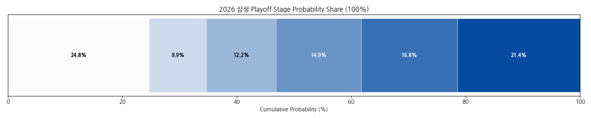
평균 7.9위를 기록할 것으로 보이며, 7-10위권에 안착할 확률이 가장 높게 보입니다.
키움의 승수는 50% 이상의 확률로 69승에서 57승에 분포할 것으로 보입니다. (기대 승률 0.437, 63.0승)
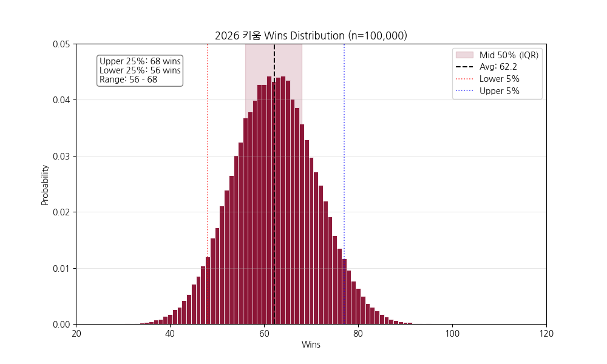
키움의 포스트시즌 진출 확률은 16.2%, 정규시즌 우승 확률은 1.0%로 계산 됐습니다. 정규시즌을 9위 이하로 끝낼 확률이 52.6%로 계산 됐습니다.
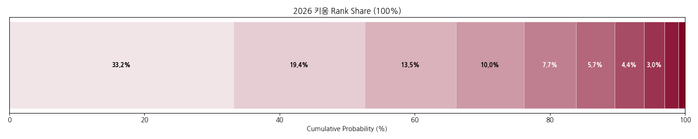
키움의 KS 진출 확률은 3.3%, 우승 확률은 1.1%로 시뮬레이션 됐습니다.
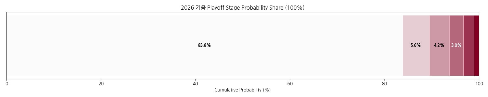
74.2승(0.515)이 평균적으로 기대되며, 상위권에 위치할 확률이 높습니다. 3-7위 사이에 있을 확률이 높습니다.
한화의 승수는 50% 이상의 확률로 80승에서 68승에 분포할 것으로 보입니다. (기대 승률 0.515, 74.2승)
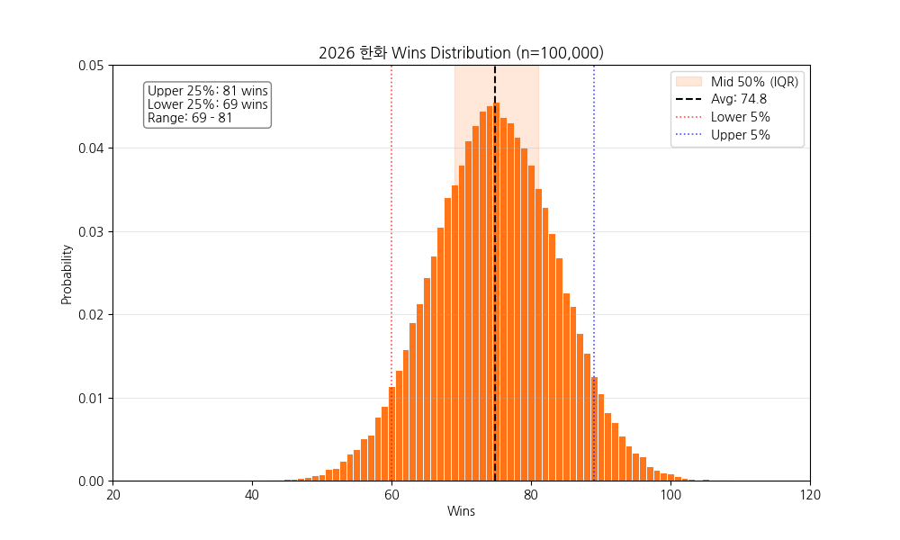
한화의 포스트시즌 진출 확률은 59.3%, 정규시즌 우승 확률은 11.3%로 계산 됐습니다. 정규시즌을 1-4위로 끝낼 확률이 47.8%로 계산 됐습니다.
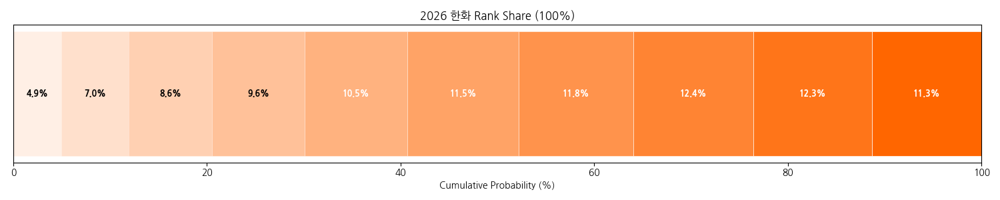
한화의 KS 진출 확률은 23.6%, 우승 확률은 11.2%로 시뮬레이션 됐습니다.
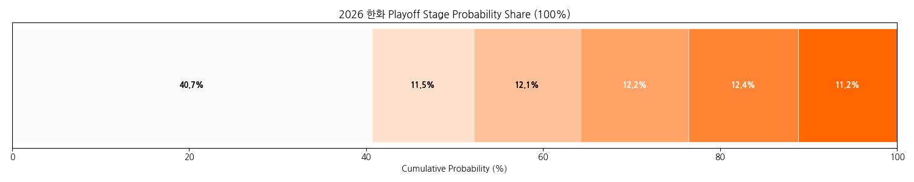
평균 6.3위를 기록할 것으로 보이며, 4~9위권 사이의 치열한 순위 다툼이 예상됩니다.
KIA의 승수는 50% 이상의 확률로 75승에서 63승에 분포할 것으로 보입니다. (기대 승률 0.480, 69.2승)
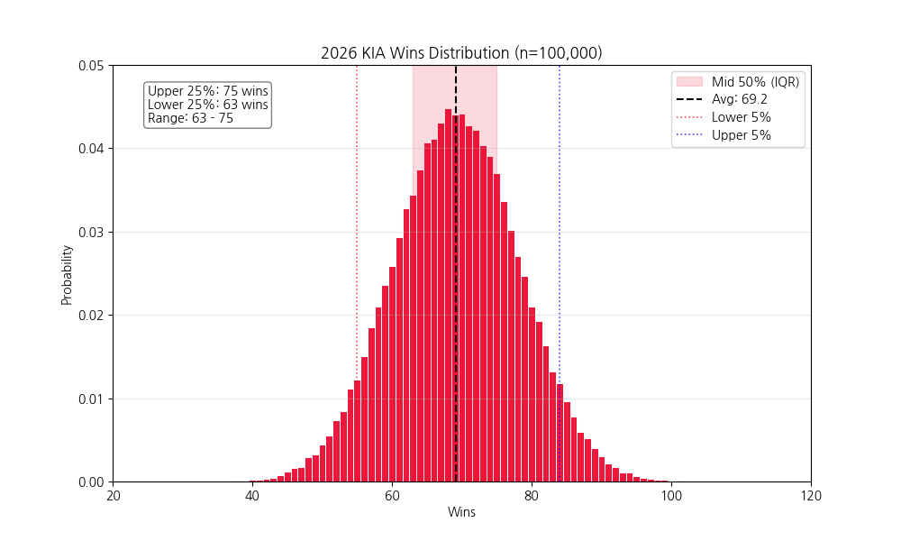
KIA의 포스트시즌 진출 확률은 37.8%, 정규시즌 우승 확률은 4.4%로 계산 됐습니다. 정규시즌을 7위에서 10위로 끝낼 확률이 51.0%로 계산 됐습니다.
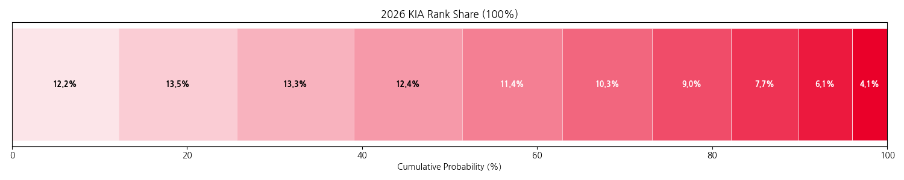
KIA의 KS 진출 확률은 10.9%, 우승 확률은 4.4%로 시뮬레이션 됐습니다.
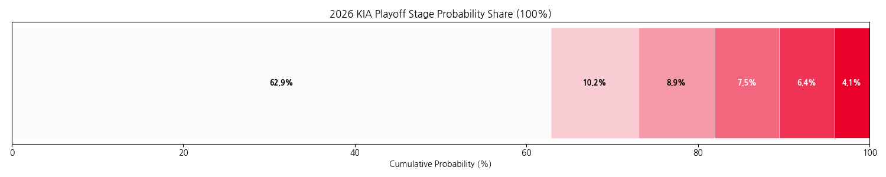
평균 6.0위를 기록할 것으로 보이며, 4~8위권 사이의 치열한 중위권 다툼이 예상됩니다.
KT의 승수는 50% 이상의 확률로 76승에서 64승에 분포할 것으로 보입니다. (기대 승률 0.489, 70.4승)
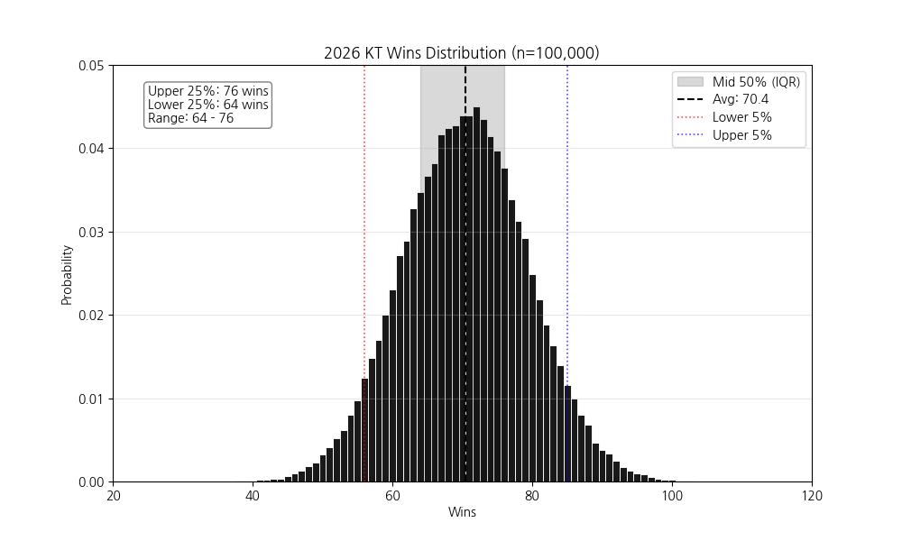
KT의 포스트시즌 진출 확률은 42.9%, 정규시즌 우승 확률은 5.6%로 계산 됐습니다. 정규시즌을 5위에서 9위로 끝낼 확률이 57.9%로 계산 됐습니다.
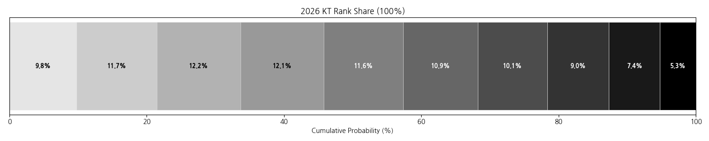
KT의 KS 진출 확률은 13.5%, 우승 확률은 5.6%로 시뮬레이션 됐습니다.
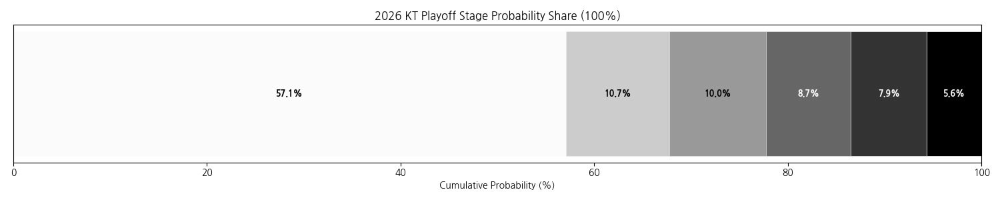
우승 후보. 한국시리즈 진출 확률이 45.1%, 우승 확률은 27.0%에 달합니다.
LG의 승수는 50% 이상의 확률로 86승에서 74승에 분포할 것으로 보입니다. (기대 승률 0.553, 79.7승)
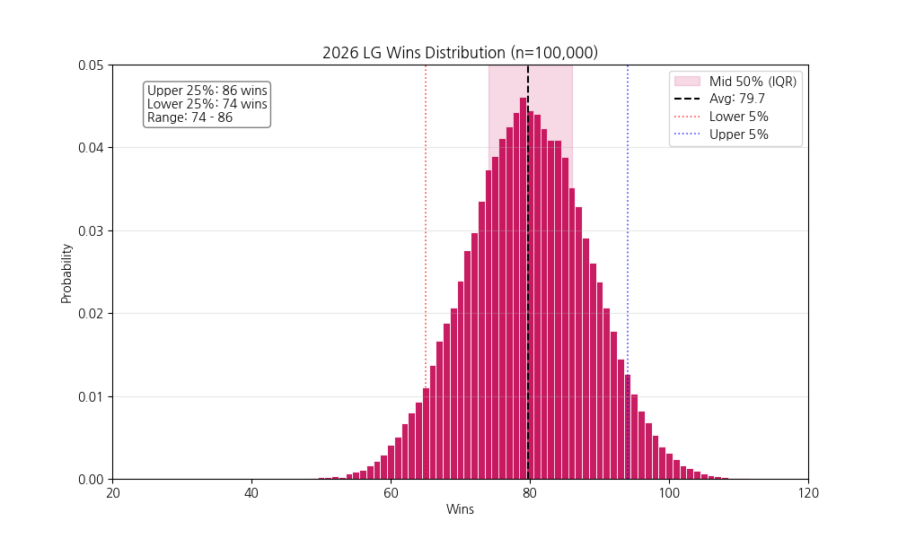
LG의 포스트시즌 진출 확률은 79.9%, 정규시즌 우승 확률은 27.5%로 계산 됐습니다. 정규시즌을 1-3위로 끝낼 확률이 60.3%로 계산 됐습니다.
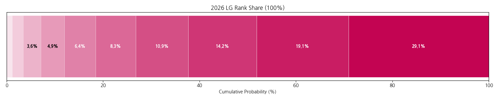
LG의 KS 진출 확률은 45.1%, 우승 확률은 27.0%로 시뮬레이션 됐습니다.
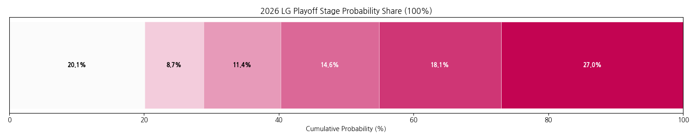
평균 5.5위를 기록할 것으로 보이며, 3~8위권 사이의 중위권 후보.
NC의 승수는 50% 이상의 확률로(IQR) 78승에서 66승에 분포할 것으로 보입니다. (기대 승률 0.493, 71.9승)
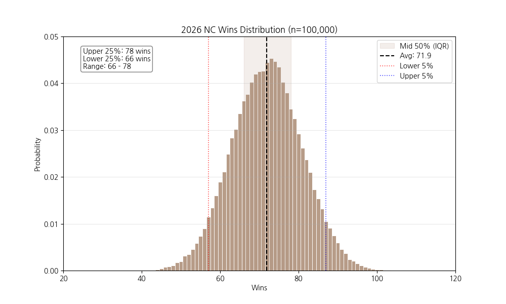
NC의 포스트시즌 진출 확률은 49.3%, 정규시즌 우승 확률은 7.4%로 계산 됐습니다. 정규시즌을 3위에서 8위로 끝낼 확률이 65.7%로 계산 됐습니다.
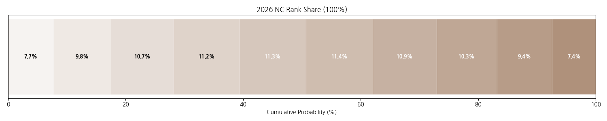
NC의 KS 진출 확률은 17.0%, 우승 확률은 7.5%로 시뮬레이션 됐습니다.
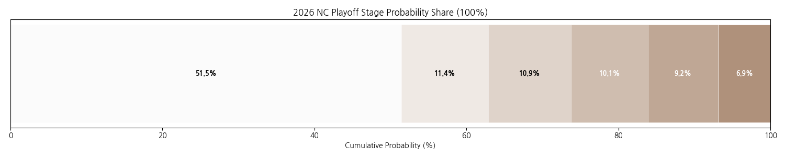
기대 승률 0.512(73.8승), 3~7위권 사이의 중상위권에 안착할 확률일 높아 보입니다.
SSG의 승수는 50% 이상의 확률로 80승에서 68승에 분포할 것으로 보입니다. (기대 승률 0.512, 73.8승)
SSG의 포스트시즌 진출 확률은 57.4%, 정규시즌 우승 확률은 10.4%로 계산 됐습니다. 정규시즌을 1-6위로 끝낼 확률이 68.1%로 계산 됐습니다.
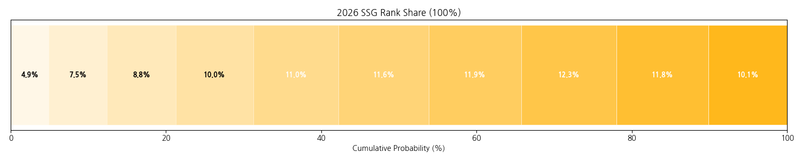
SSG의 KS 진출 확률은 22.4%, 우승 확률은 10.6%로 시뮬레이션 됐습니다.
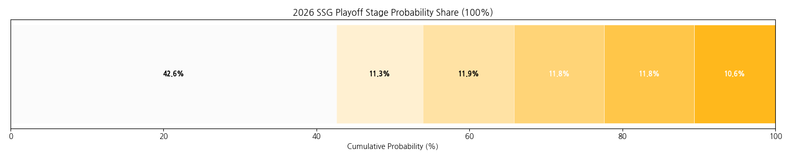
시뮬레이션 방법이 궁금하다면? 2026 KBO Preseason Report - 계산편
© 2026 psodds.com